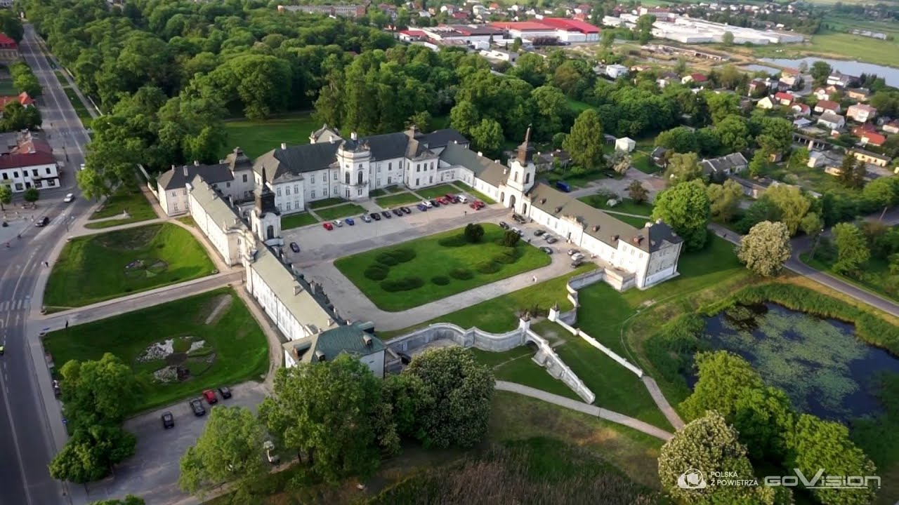

Kilka Słów o Radzyniu
Radzyń Podlaski - miasto powiatowe w województwie lubelskim leżące nad rzeką Białką, zajmuje powierzchnię 19 km kw. Mieszka w nim ok. 16,5 tys. osób.
Radzyń Podlaski jest miastem atrakcyjnym turystycznie, choć wciąż mało znanym i nieodkrytym. Jego ozdobę stanowi zespół pałacowo-parkowy z połowy XVIII wieku z bogatą dekoracją rzeźbiarską, najdoskonalszy w Polsce przykład tego typu budowli.
